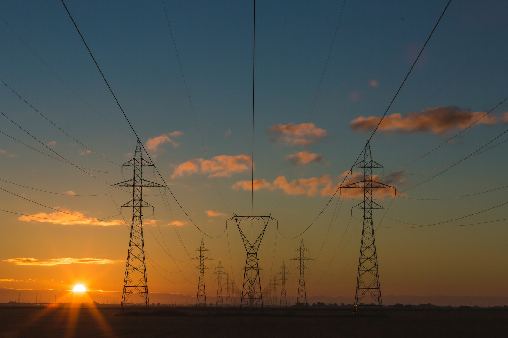

산은·수은 긴급자금
정책금융이 정상화 작업을 위한 유동성과 시간을 제공.

동일한 기준의 구성비가 아닙니다. 금액을 합산하거나 지원액의 배분으로 해석하지 마세요.
정책금융이 정상화 작업을 위한 유동성과 시간을 제공.
그룹 보유자산을 매각하며 자구계획을 실행.
유상증자·현물출자 등으로 재무구조 개선.
출처: 산업은행 2022.02.28 보도자료 [1] · 자체 제작 인포그래픽. 자산매각과 자본확충의 자금 흐름에는 중복이 있을 수 있습니다.
2020–2022년 두산중공업 구조조정을 통해 살펴보는 산업은행의 개입 논리와 조건부 금융지원의 성과.
산업은행 2022.02.28 종결 보도자료 기준. 세 금액은 성격과 범위가 다르며 합산할 수 없습니다. 자산매각과 자본확충에는 자금 흐름상 중복이 있을 수 있습니다. [1]
아래 결론은 공개자료에 근거한 작성자의 분석이며, 산업은행의 공식 심사 의견이 아닙니다.
에너지산업 파급효과와 금융시장 경색을 고려하면 개입 필요성은 인정된다. 다만 사업·재무 취약성이 이미 누적돼 있었으므로 대주주 책임, 자산매각, 자본확충과 사업 재편이 병행되어야 한다.
공식 자료에 나타난 복합 원인: 기존 사업 부진 + 자회사 지원 부담 + 단기자금 차환 중단. [1]
석탄화력 등 주력 분야의 실적이 둔화됐다. 기존 사업의 현금창출 여력이 약해진 상태에서 충격을 맞았다.
자회사 지원 부담이 재무구조 악화에 더해졌다. 정상화에는 본업뿐 아니라 그룹 차원의 자금 배분 개선도 필요했다.
코로나19로 금융시장이 경색되며 단기 차입의 차환이 막혔다. 누적된 취약성이 즉각적인 유동성 부족으로 전환됐다.
개입 근거가 있다고 해서 어떤 규모·조건의 지원도 정당해지는 것은 아닙니다.
공개 보도자료만으로 대안별 비용이나 정책지원의 순편익을 정량 확정할 수 없다.
산은·수은의 자금 공급과 두산그룹의 재무구조 개선을 구분해 읽어야 합니다. [1]
유동성 부족에 대응해 산은·수은에 자금지원 요청.
그룹 보유자산 매각과 자본확충 등 자구계획 약정.
1.15조 원 규모 증자 완료. 총 자본확충 실적의 일부.
외부 재무진단 등을 거쳐 독립경영 가능 수준 회복 판단.
자구계획에는 두산타워·두산인프라코어·두산솔루스 매각, 대주주 등의 증자 참여, 두산퓨얼셀 지분 등 증여·현물출자, 인원 감축·임금동결 등이 포함됐습니다. 흐름도는 설명용 개념도이며 개별 자금의 회계적 추적표가 아닙니다.
지원기관의 ‘성공적 종결’ 평가와 독립적인 장기 성과 평가는 구분합니다.
| 평가 기준 | 판단 | 근거와 한계 |
|---|---|---|
| 긴급 위기 대응 | 긍정적 | 정상화 작업 진행 및 2022년 채권단 관리 종료 확인. |
| 자구계획 실행 | 긍정적 | 공식 자료에서 자산매각 3.1조 원, 자본확충 3.4조 원 확인. |
| 독립경영 가능성 | 당시 진단상 긍정 | 산은은 외부전문기관의 재무진단에서 회복을 확인했다고 발표. 진단 원문 전체를 검토한 것은 아님. |
| 장기 사업 경쟁력 | 별도 검증 | 신사업 전망과 실제 수익·현금창출은 다름. 사업별 실적과 현금흐름 검증 필요. |
| 사회 전체 순편익 | 확정 불가 | 정책자금 기회비용, 고용 조정 비용, 무지원 대안과의 비교 자료 부족. |
아래는 작성자의 제안입니다. 실제 대출약정의 조건을 재현한 것이 아닙니다.
단기 만기 도래액, 가용 현금, 필수 지출을 확인해 실제 부족자금에 맞춰 지원한다. 만기만 연장하며 위험을 누적하지 않는다.
출자·자산매각 이행을 점검하고 진척도에 따라 지원한다. 단, 무리한 급매로 핵심 경쟁력이 훼손되지 않도록 잔존 사업의 생존성을 함께 평가한다.
비핵심 계열사로의 지원 확대를 통제하고 정상화 목적에 맞는 사용을 확인한다. 사업별 현금흐름과 투자 지출도 추적한다.
신사업의 성장 기대만으로 지원을 연장하지 않는다. 정상화 전망이 악화될 경우 추가 사업 재편·매각 등 대안을 재검토한다.
스터디용 예상 질문입니다. 산업은행 실제 기출이나 공식 평가기준이 아닙니다.
산업적 중요성만으로 지원을 정당화할 수는 없습니다. 회생 가능성, 대주주 책임, 지원 조건과 회수 가능성을 함께 판단해야 합니다. 이 사례에서는 그룹 자산매각과 자본확충이 실제로 동반됐다는 점을 확인할 수 있습니다.
자산매각과 자본확충이 핵심이었다는 점을 인정해야 합니다. 정책금융의 역할은 그 실행에 필요한 시간을 확보한 것으로 해석할 수 있습니다. 다만 매각이 없었다면 어떤 결과였을지, 지원이 매각 성과에 얼마나 기여했는지는 별도 분석이 필요합니다.
그 가능성을 배제할 수 없습니다. 당시 차환 차질과 다수 채권자 문제는 공식 자료로 확인되지만, 무지원 상황의 결과는 관측할 수 없습니다. 다른 조달·구조조정 수단과 비용을 비교해야 정책 개입의 추가 효과를 더 정확히 판단할 수 있습니다.
정책금융은 기업의 손실을 무조건 대신 부담하는 수단이 아니라, 산업적 가치가 있는 기업에 정상화 시간을 제공하고 그동안 이해관계자의 책임과 사업 재편을 이끌어내는 수단이어야 합니다.
기업을 유지하는 것과
지속가능하게 정상화하는 것은 다르다.
지원의 필요성은 산업에서 찾되,
지원의 조건은 재무와 책임에서
찾아야 한다.
사실, 지원기관의 평가, 작성자의 판단을 구분했습니다.